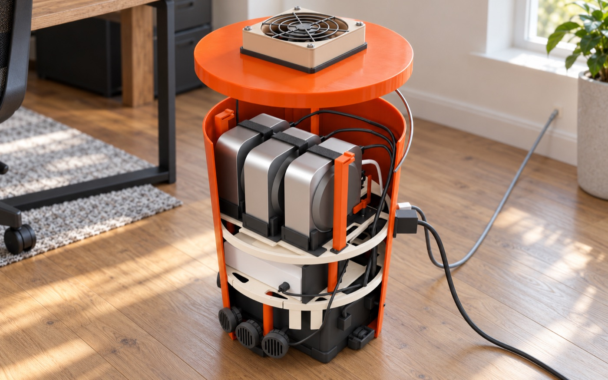
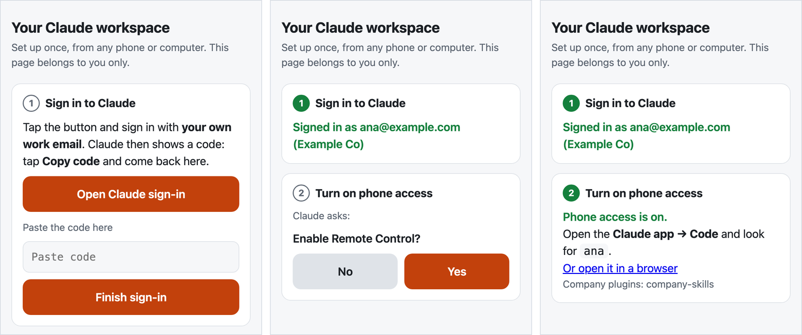

A note before you start: this page is for people, but we know you'll hand it to your agent anyway. So it's plain HTML, and there is a plain-text copy at /llms.txt. Hello, agent.
Damaris X / an AI contractor for small offices
We put AI to work in your office, the way a contractor does a job.
You hire us like any contractor. We come and look, quote a fixed price for a set job, install one box, hand it over against a checklist, and keep it running for a monthly fee. After that, AI does the follow-ups, the portal checks and the paperwork, and a person approves anything that leaves the office.
How hiring us works | A real example | Other offices | Under the hood
[early] Nothing is sold yet, so there are no prices here. The AI jobs already run every day in two small companies we operate.

How hiring us works
Like any contractor: look, quote, install, hand over, maintain.
- We come and look. A visit to your office: who does what, where the hours go, which jobs could go to AI. You get a short written plan.
- You get a fixed quote. A set list of jobs, a price and a date. Want more later? We quote the change before we do it.
- We install the box. One box in a corner. It takes two cables, power and network. Each person signs in with their own account; we never hold your passwords.
- We hand it over against a checklist. We go through it with you. Anything that fails gets fixed before we call it done.
- We keep it running. A monthly plan: we watch it from afar, fix what breaks, keep it up to date and add new jobs as you need them.
The handover checklist
- Pull the box's power plug: it keeps running on its battery, and starts again by itself when the power is back.
- Pull the network cable: the jobs pause, and catch up when the line is back.
- Everyone asks the AI something from their own phone and gets an answer.
- Each job in the quote runs on real work, start to finish, with a person approving what goes out.
- When something stops, we get the alert, and you know who to call.
[plan] The box is a prototype; these are the checks we are building it to pass.
A real example [in use today]
From the first email to the paperwork, at a solar installer we run.
This one is real. We run a small solar installer that designs systems, buys the materials and installs them. These jobs already run there today.
- New leads land on the sales board. Each customer has a card on the sales board. The AI reads the customer mailbox and keeps each card up to date. A forwarded chat message or a note from a phone call can become a lead card too. The AI checks for the same customer first and asks once for missing information.
- Contracts get prepared, not sent. It goes through each blank with a person, one question at a time, shows a highlighted preview and makes the PDF for signing. A person sends it.
- Signed deals become projects. When a contract is signed in the e-signature service, it marks the sale as won. When a person starts it, the AI assigns a project number and copies a standard set of folders. It moves and checks the sales files, sets up the project board and checklist, and lists the information still missing.
- Purchasing follows the deliveries. It reads order, shipping, delivery and invoice emails and keeps the purchasing board current, even when one order arrives in several packages. A vendor's new prices go on the price list as “pending approval”, next to the old ones; only a person approves them.
- Government letters become tasks. A letter that needs action becomes a task for the finance team, with the original attached and its deadline as the due date. A letter that only confirms something gets no task.
- Receipts become expense forms. From a photo of a receipt it fills in the expense form, asking only how it was paid and which project it belongs to. A person attaches the receipt and presses Submit.
- Sales summaries and regular checks. It posts a weekly sales summary and checks the boards every hour for specific problems. Each board has written limits on what the AI may do there.
The AI watches, records, drafts and reminds. People send contracts, approve prices, pay and sign.
What it does in an office like yours [illustrative]
Two more offices, two more sets of jobs.
Examples of work we could quote, not customer stories. Every office gets its own list after the first visit. In both, a person approves anything that leaves the office.
A real-estate brokerage
- New enquiries get a reply drafted. A buyer writes at 9 pm about a listing. The AI drafts a reply from the listing and the agent's calendar, ready for the agent to approve from the phone.
- Showings get scheduled. It suggests times that suit the buyer, the seller and the agent, and prepares the confirmations. The agent checks availability and access before approving them.
- Listing descriptions start from your notes. It drafts the description from the agent's notes and photos. The agent checks the facts and reviews it under the brokerage's advertising and fair-housing rules before it goes out.
- Deal deadlines stay in view. It keeps each deal's paperwork checklist and deadlines together, and reminds the right person days before something is due.
- Monday starts with a summary. New leads, showings, open deals and what is due this week, on one page.
People give client advice, approve listing descriptions and approve every message that goes out.
A small clinic
- Appointment reminders. It prepares reminders and rescheduling messages. Staff approve each message before it goes out.
- Insurance details checked before the visit. It checks insurance details on the portals the clinic already uses and flags missing or unclear information. Staff confirm what the visit needs.
- Intake forms followed up. It prepares the forms and the reminders for missing ones, and lays out the answers for staff.
- Prior authorization requests drafted. It fills in draft requests from information the clinic supplies. Staff check the details, add the clinical justification and submit.
- Common questions answered from your policies. Hours, parking, what to bring, how to pay: drafted from the clinic's own policies, for staff to approve.
Patient information handled with care. Patient privacy rules (HIPAA) affect which jobs we can offer. Before we quote, we review with the clinic and its advisers which services would handle patient information and what agreements are needed, and we say up front which jobs we can't do within those limits. We make no compliance or certification claim.
Staff approve every patient message, submit the paperwork and make the care decisions.
What changes for the team [illustrative]
A Monday at a ten-person company, with an agent each.
Nobody learns a new tool. Each person talks to their own agent from the phone, the agent works in the company's systems with the company's skills, and a person approves anything that leaves the building.
The books
"Which invoices are overdue?"
The person who chases payments asks from the train. The agent reads the books, drafts the reminders and posts them for approval. One tap, and it sends them and records what it did.
The portals
"Anything new on our permits?"
The agent checks the government portal in a real browser each morning, updates the job's card on the team's board, and flags what needs a person.
A new hire
"How do we do this here?"
Instead of interrupting a busy colleague, the new person asks the agent, which answers from the same skills everyone else uses. The floor rises for everyone.
Under the hood / for technical readers and investors
What the best AI teams build for themselves, installed in a ten-person company.
An always-on agent for each person, one library of skills that every agent shares, and the machines kept running, set up by an engineer who then works on your workflows. The most AI-native teams build this with their own platform engineers. A ten-person company has none, so we bring it.
Investors know this work as forward-deployed engineering (FDE). To an office, we are its AI contractor.
How it works | Where it stands
[in daily use] The skills already run every day in two small companies we operate. [early] carafe is a proof of concept, the Fleet operator is lab-tested, and the box is a plan.
a ten-person office illustrative ana ben chen dia eli carafe carafe carafe carafe carafe fay gus hana ivo jun carafe carafe carafe carafe carafe a Mac station per security boundary [front desk] [finance] [back office] [audit] [owner] +---------------------------------------+ | skills | | finance · permits · sales · … | +---------------------------------------+ | carafe box | | the small computer that keeps it all | | running | +---------------------------------------+
The problem
Big companies get an engineer on site. Small companies can't pay for one.
AI labs send engineers to their big customers, forward-deployed engineers (FDEs), to sit with a team until the agents do real work. That is how agents earn their keep. At ten people, nobody pays for that.
The work is specific
Someone has to sit with the team.
Agents pay off on a company's own workflows: its portals, its boards, its books. Each one has to be found, taught and checked.
The machines must stay on
Agents stop when the laptop closes.
Someone has to keep a machine awake, signed in and patched for every person, and fix it from afar. That is a platform team's job.
Nothing carries over
The next company pays again.
Without reusable skills, each engagement repeats the work. What an engineer built for one office stays there, so the cost never comes down.
How we answer it
An engineer for days, not a platform team for years.
The infrastructure is the same in every office, so the engineer's time goes to the work. The work is kept as skills, so the next company of the same kind starts ahead. That is the aim; pilots will measure it in setup hours, support minutes and tasks done.
Setup
The box goes in.
An engineer, ours or a partner's, plugs the carafe box into the office network, connects the company's sign-in and gives everyone a carafe. Each person signs their agent in themselves.
The engagement
Work, not plumbing.
With the infrastructure already standard, the engineer sits with each team and turns one or two of its workflows into skills.
After
Skills travel.
With the company's permission, and checked for client names and secrets, those skills become a pack for that kind of business. A subscription per person covers monitoring, upgrades and new skills.
The box, the engagement and the subscription are the plan, not yet sold. No prices yet.
The playbook
The playbook we work from.
Y Combinator runs its agents on its own software, one database and a tool registry its teams keep adding to. We built the same habits in our own two companies. Each piece has a counterpart in our kit; some are built, some are still planned.
Left column from Pete Koomen and YC's partners, "Inside YC's AI Playbook", Y Combinator, 2026-05-27. The mapping is our interpretation, not evidence for our kit. Damaris X is not affiliated with or endorsed by Y Combinator.
| built in-house, as YC describes it | our counterpart, built or planned |
|---|---|
| teams write their own workflows "as English with prompts", and engineers leave the loop | skills, written with the people who do the work |
| a shared tool registry: 20 tools at first, "more than 350 today", every team adds its own | skilldecant: one library, poured into every agent |
| a nightly loop that reads agent conversations and improves the skills | darwin improves a skill on request [nightly loop next] |
| a multiplayer harness, which "I don't think has been solved well yet by anybody" | carafe: an agent per person, all sharing the company's skills; a first step |
| agents running on everyone's machines | Fleet operator and carafe box keep them on |
| a platform team that builds and runs all of it | an engineer for a short engagement |
carafe [proof of concept passed]
An always-on agent for each person, driven from the phone.
A carafe is one person's own container: Claude Code, their work folder and the company's skills. They set it up once on one web page, the cellar door, then work from the Claude app. No computer of theirs has to stay on.
- Built and walked through end to end on 2026-10-26: sign-in, phone access turned on, a session started from claude.ai/code in a browser running in the carafe, and recovery after a restart. A test on a real phone is next.
- Designed for one namespace per person on k3s. For work that needs a real desktop and Chrome, or its own security boundary, a Mac station runs the same setup on a Mac mini: one for finance, one for audit, one for the owner, as many as the company needs.
carafe / the cellar door
One page to set it up. After that, the phone.

Two rules from the start
Everyone signs in themselves. The sign-in happens in the person's own browser, through Anthropic's flow. The one-time code goes straight into their own carafe; the setup page keeps no copy.
The agent's questions are the person's to answer. "Trust this folder?" and "Enable Remote Control?" are shown verbatim and answered by the person, never for them.
skilldecant [v0.10.0, in daily use]
One library of skills, shared by every agent.
A skill is a SKILL.md and its scripts: a workflow written down so an agent can do it. skilldecant installs a company's skills once and links them into Claude Code, Codex, OpenClaw and Hermes. Release a new version and upgrade once; every agent on the machine reads it.
- One copy, no drift. By default agents read the installed library through links, so there is nothing to copy and nothing to fall behind.
- Checked before it travels. A shared collection is linted for client names, secrets and personal paths before it leaves a company.
- Kept sharp. darwin, alchaincyf's open-source skill optimiser (MIT), scores and improves a skill. Our packaging adds judges from a different model family, scoring each edit blind.
git repo the skill's source, versioned │ installed once, with Homebrew one library a single installed copy │ linked into each agent Claude Code link Codex link, once switched on OpenClaw link + one config entry Hermes link + one config entry # upgrade once: every agent follows
Fleet operator [lab-tested] + carafe box [plan]
The machines stay on, and a failed check gets its fix.
The Fleet operator runs Fleet, the open-source device manager, and checks that every Mac station is awake, logged in and running its agent. When a check fails and the Mac is online, it runs the configured fix; signing in again stays with the person. The carafe box puts it on a Raspberry Pi 5 in the office, as the company's own control plane.
- 51 s to notice a stopped agent, in the lab
- 142 s until it ran again, in the lab
- 0 people touching the Mac
Measured 2026-10-28 in a kind cluster against a macOS 26.5 VM. Not yet in production.
no data centre— the box is yours- The company owns the box and decides who is admin. Support would get in only with its approval, each visit logged.
no open ports— the office network- Claude Code's Remote Control opens no inbound ports, so phones need no public address. Fleet stays on the office LAN.
a Mac per boundary— as many as needed- Front desk, finance, back office, audit and the owner each get their own Mac, sign-ins and keys, so one role's agent is kept away from another's files and accounts. The operator keeps every one running.
remote hands— planned- A battery and a KVM for each Mac are in the box design; a 5G backup line is added where a real failure calls for it.
Status
Where each piece stands, without rounding up.
| piece | what it does | status |
|---|---|---|
| skills | workflows written so an agent can run them: finance, permits, sales, boards, mail | [in daily use] in two small companies we operate |
| skilldecant | installs skills once and links them into every agent | [v0.10.0] on our own machines |
| carafe | an always-on agent per person, from the phone | [proof of concept] passed 2026-10-26; HTTPS, company sign-in and provisioning next |
| Fleet operator | keeps Mac stations awake, signed in and running | [lab-tested] six checks, two companies kept apart; MDM next |
| carafe box | the office's own control plane on a Raspberry Pi 5, with the network, a battery and the Mac stations, in one bucket | [prototype in progress] designed; the first printed parts are being test-fitted |
| the engagement | the contractor job: a visit, a fixed quote, the install, the handover and a monthly plan; skills packs by industry | [plan] our own two companies first |
Licensing and contact
Free for noncommercial use. Licensed for companies.
For small companies that want agents at work without a platform team, and for the engineers and IT partners who would set them up.
ccheng@ccheng.us | | Write to us
Write for a commercial license, a pilot, or to become a setup partner.
Noncommercial
carafe and skilldecant are licensed under the PolyForm Noncommercial License 1.0.0. Source access on request.
Commercial
Commercial use, including running them for a company's own staff or its clients, needs a separate written license from Cheng Cheng.
Yours stays yours
What a company writes as skills, and what a person keeps in their carafe, belongs to them.
Third parties
darwin is alchaincyf's, under MIT. Fleet, Claude Code, Codex, OpenClaw, Hermes, Homebrew and macOS keep their own terms.